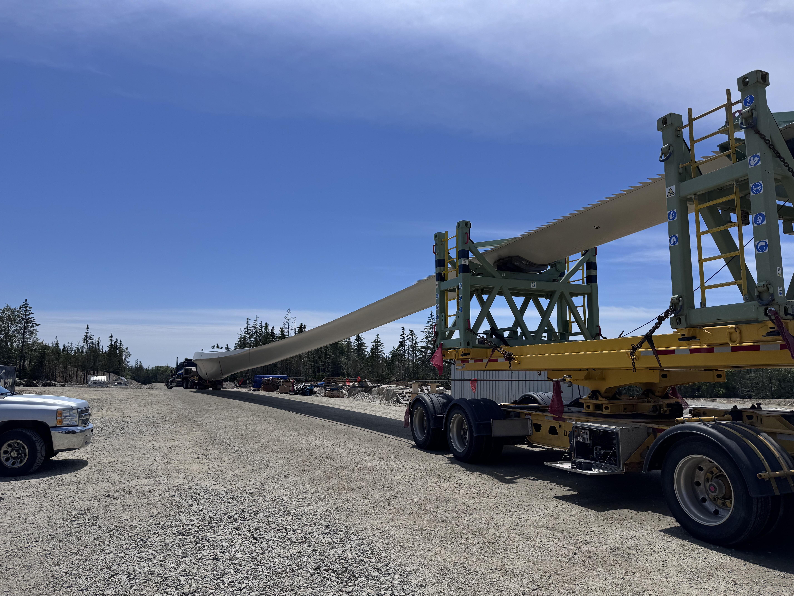
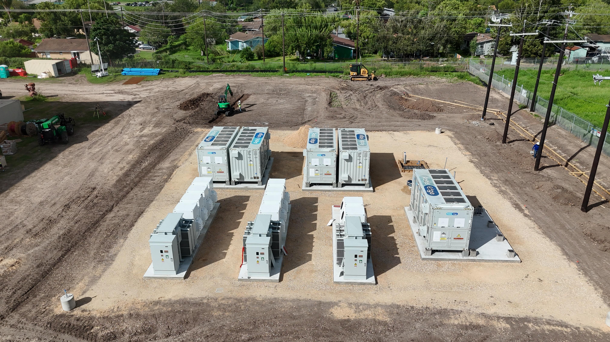
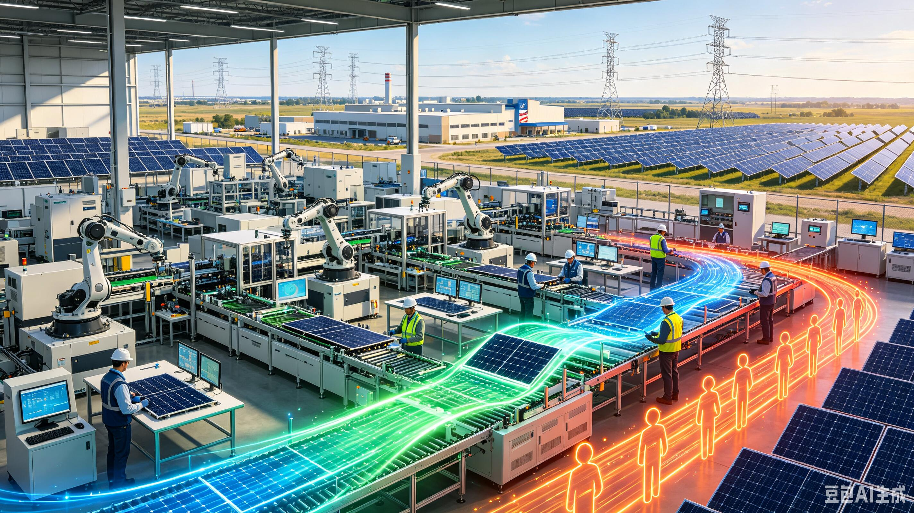
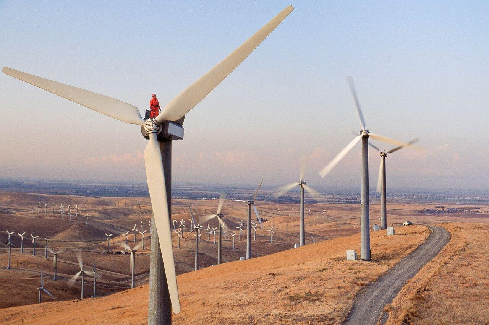
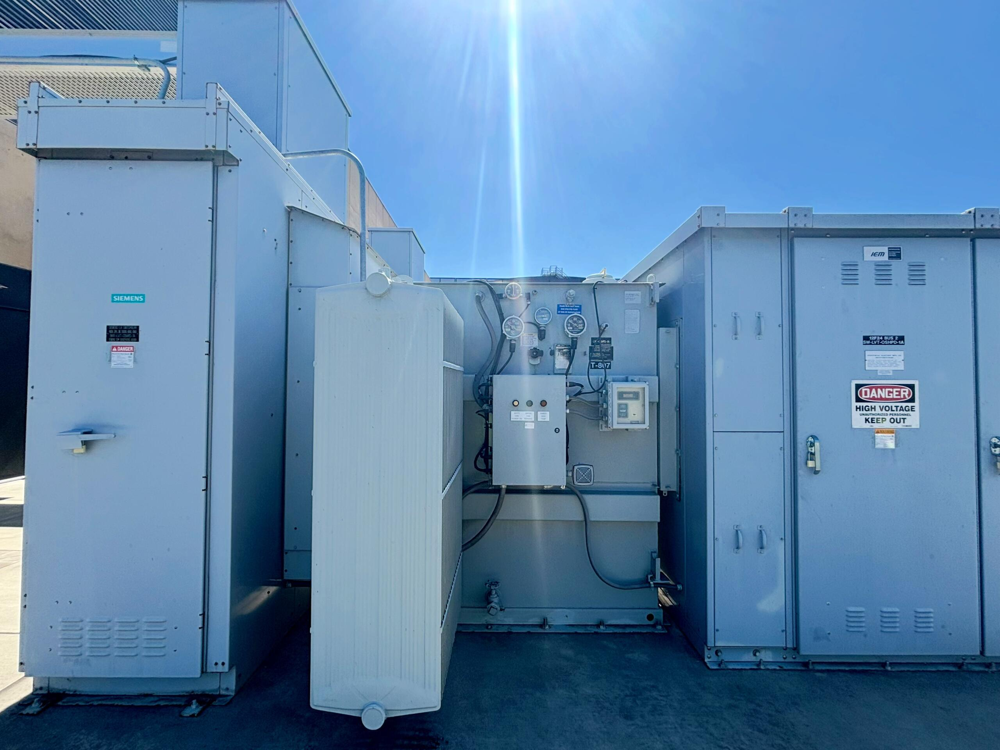

Energy-Led Opportunity
We look for places where power availability, infrastructure demand and local conditions can support a practical project.
TerraHash Energy is an early-stage energy and digital infrastructure company. We are developing the relationships, sites and operating capabilities needed to turn practical infrastructure opportunities into durable businesses.
Our Investment ApproachOur focus is straightforward: understand the power opportunity, validate the site, build the right operating partnerships and advance projects only when the underlying economics and execution plan make sense.

We look for places where power availability, infrastructure demand and local conditions can support a practical project.

Our goal is not to build for headlines. We plan infrastructure around the needs of the site, the operator and the end customer.

Early-stage execution depends on details. We focus on site work, counterparties, technical requirements and a clear path to operation.

Rising electricity demand and continued investment in U.S. energy and data infrastructure are creating room for new, well-executed projects.
At our stage, progress is measured by execution: finding viable opportunities, completing diligence, building strong counterparties and moving projects through defined development steps.
Explore Our Infrastructure
As an early-stage company, we believe disciplined sequencing matters. We intend to commit resources where the technical work, commercial case and execution path are sufficiently developed.
Prioritize diligence, development work and capabilities that move real projects forward.
Use staged decisions to avoid getting ahead of project readiness or market demand.
Reinvest experience into stronger processes, partnerships and future development.
Early-stage companies earn confidence through consistency. Our aim is to communicate what we are working on, what has changed and what still needs to be accomplished.
Share meaningful company and project progress when appropriate.
Maintain practical conversations with long-term capital partners.
Provide qualified counterparties with structured information when appropriate.
Keep a clear channel open for investor and strategic-partner inquiries.
Good governance starts before a company becomes large. We are building decision-making, documentation, compliance awareness and risk discipline into the way TerraHash develops.
Corporate Contact
We welcome conversations with investors and strategic partners who understand infrastructure development and long-term company building.
Important: This website does not constitute an offer or solicitation to purchase securities, tokens or other financial products. No financing terms, valuation, fundraising amount, operating metric or investment return is represented unless specifically identified in formal company disclosures. Any future financing or digital-asset activity is subject to applicable legal, regulatory, tax and compliance requirements.